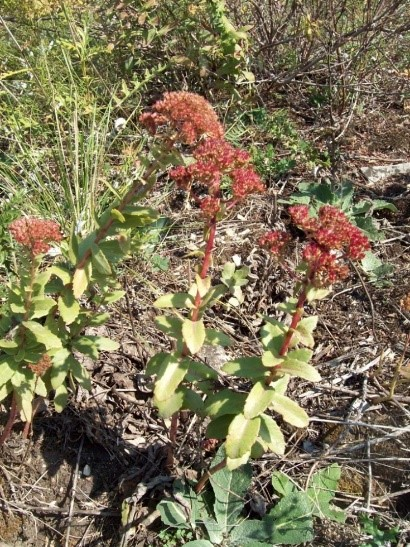
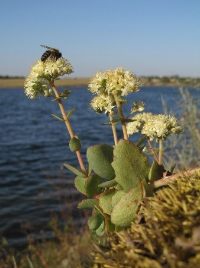
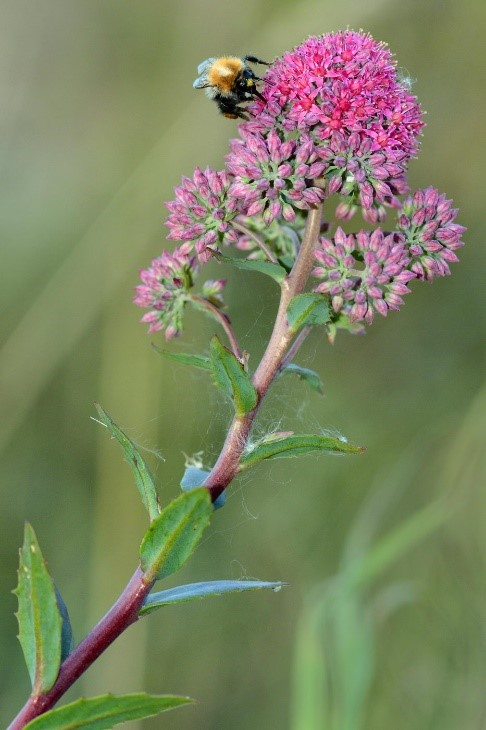

|

Многолетнее травянистое растение с клубнями, 20–50 см выс. Листья яйцевидные, мясистые, сидячие, у основания почти стеблеобъемлющие,
довольно расставленные, очередные, но отчасти супротивные, более или менее туповато-зубчатые. Цветки пурпурные,
собранные в щитковидно-метельчатое соцветие. Цветет в июле — августе, плодоносит в августе — сентябре. Размножается семенами.
Фотограф: Владимир Васюков |

Корневища короткие, деревянистые. Корни клубневидно утолщенные, иногда почти шаровидные, резко утончающиеся. Стебли 15–50(80) см,
восходящие, реже простертые. Листья супротивные (по крайней мере, в верхней части стебля), расставленные,
яйцевидные или продолговато-яйцевидные, 1.5–5(8) см дл., 1–2(3) см шир., верхние – при основании сердцевидные или стеблеобъемлющие,
нижние – округлые или клиновидно суженные, цельнокрайние или неясно и мелко выемчато-зубчатые. Соцветие 3–10 см дл., 2–5 см шир.,
состоит из нескольких расставленных плотных щитков. Цветки мелкие, бледно-желтые или зеленоватые, иногда со слабым фиолетовым оттенком.
Чашелистики ланцетные, в 3–4 раза короче лепестков, последние 2–3(4) мм дл., ок. 1–1.5 мм шир. Тычинки равны лепесткам,
пыльники желтые или фиолетовые. Плодики ок. 4 мм дл., с прямым крепким носиком.
Фотограф: Павел Евсеенков |
|

Многолетнее травянистое растение высотой 10-80 см с толстым веретеновидным или клубневидным корнем. Стебли прямостоячие и лишь в
верхней части изредка ветвистые, серо-зеленые, мясистые. Листья очередные или изредка супротивные, продолговатые, с клиновидным основанием,
мясистые. Соцветие щитковидное, густое, верхушечное. Цветки правильные, пятичленные, лепестки розовые или пурпурные.
Цветет с середины июля до сентября. Плод — многолистовка. Растет по опушкам, лугам, паровым полям, зарослям кустарников.
Фотограф: Павел Горбунов |